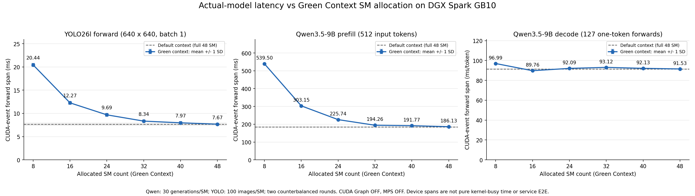
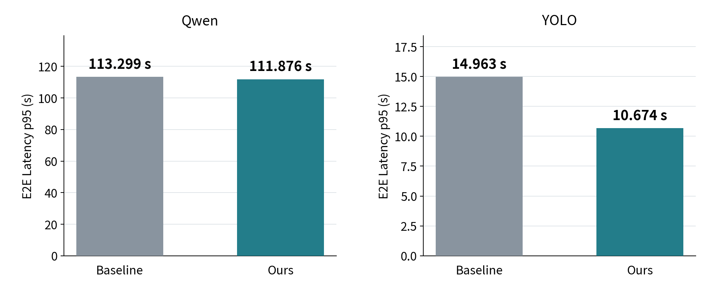

CJ 4DPLEX AI Platform 개발 사전과제 — Technical Report
보고서 주제: Multi-Model AI 추론 운영 인프라 구축 및 최적화
분석 대상: Qwen3.5-9B와 YOLO26l의 단일 GPU 동시 추론
작성 기준: 2026-11-12 · 안하민
실험 근거: 동결 baseline의 초기 측정 자료, 2026-11-09 모델별 SM 민감도 분석, 2026-11-10 native MPS 정적 분할의 원시 요청·로그·집계·GPU 진단, 제어된 프로세스 장애 주입 결과를 사용했다. 원시 자료는 로컬 저장소에 보관되어 있으며, 제출 GitHub의 최종 업로드·평가자 접근 확인과는 구분한다.
성능 평가는 Qwen 10건·YOLO 300건의 유한 Burst로 한정한다. 성능 목표는 탐색 후 설정한 상대 평가 기준으로 설명하고, 장애 대응은 실제 관측·주입 실험에서 검증한 범위만 기술한다.
1. 문제 정의
1.1 배경 및 목표
콘텐츠 제작 환경에서는 텍스트를 생성하는 LLM과 영상·이미지의 객체를 검출하는 CV 모델이 같은 GPU를 공유할 수 있다. 실행 시간과 자원 요구가 다른 작업이 겹치면 GPU 실행 간섭, 추론 지연 증가와 후속 Queue 대기가 발생할 수 있다. 따라서 모델별 최고 속도뿐 아니라 한정된 GPU 자원에서 작업 완료 시간과 서비스 지연을 함께 관리해야 한다.
본 과제는 단일 DGX Spark GB10의 GPU 1개·48SM에서 두 모델을 독립 운영하고, 실제 요청과 단계별 지표로 병목을 확인한 뒤 자원 배분 정책을 검증하는 것이다. 특히 Qwen의 전체 응답을 유지하면서 YOLO의 Burst 지연을 줄이는 것을 목표로 한다. GPU 경합의 정확한 원인은 측정 전에 확정하지 않는다.
모델의 정확도 향상·재학습은 범위가 아니다. Qwen3.5는 멀티모달 가능 모델이지만 본 실험은 텍스트만 입력했다. 모델 특성 분석의 결론을 모든 VLM에 일반화하지 않는다.
1.2 시스템 구성과 요청 처리
| 항목 | 구성 |
|---|---|
| 하드웨어 | NVIDIA DGX Spark GB10, 단일 물리 GPU, 48SM, unified memory |
| LLM | Qwen3.5-9B, BF16, SDPA, FLA·causal-conv GPU 경로 |
| CV | YOLO26l, 원본 PyTorch FP16, 640×640, batch 1 |
| 배포 | Kubernetes 기반 독립 Qwen/YOLO Pod, 모델별 replica 1 |
| 요청 처리 | 독립 FIFO Queue와 Worker 1개, 모델 시작 시 로딩 후 상주 |
| 최신 Burst 큐 | Qwen 대기 16, YOLO 대기 512; 일반 서빙 기본 대기 8과 구분 |
| 입출력 | ROS2 DDS, 모델별 고정 요청 Topic, UUID별 결과 Topic |
| GPU 공유 | MPS 없음·일반 MPS·정적 MPS를 비교; 최종 정적 실험에 Green 미사용 |
요청은 ROS 수신→FIFO enqueue→Worker dequeue→generate/predict→CUDA 연산→Pod의 결과 publish→UUID별 클라이언트 수신 순서로 진행된다. 두 모델 사이에 공동 Queue·실행 순서 조정·전역 작업 lock은 없다. 10/300은 요청 묶음 크기이며 모델 텐서 batching이 아니다.
그림은 후보 8/40을 나타낸다. Baseline에서는 파티션 없이 같은 GPU를 공유한다. 결과 발행은 GPU가 아닌 각 Pod의 Worker가 수행한다. UUID는 요청 혼선 방지이지 인증·암호화 수단이 아니다.
Kubernetes는 배포·기본 재시작을 담당하고, device-plugin의 nvidia.com/gpu.shared는 접근 슬롯을 표현한다. 이 슬롯이 SM·메모리를 절반씩 예약하지는 않는다. 정적 SM 분할은 MPS가 담당한다. 관측에는 JSONL·UUID·호스트 자원 샘플·별도 Nsight를 사용했으며 전용 통합 모니터링 플랫폼을 구현했다고 가정하지 않는다. 상세 아키텍처.
1.3 주요 평가 지표
- 요청 E2E: 요청 JSON 생성/publish 직전부터 대응 응답 수신·파싱까지. FIFO·모델 호출·기타 서버 처리·전송/클라이언트 잔여를 포함한다.
- 모델 호출: Qwen
generate()와 YOLOpredict()의 wall time. - CUDA Event: 모델 호출 내부 forward 경과 구간이며 순수 SM-active 시간이 아니다.
- 내부 TTFT: generate 진입 후 서버에서 첫 생성 토큰을 관측할 때까지. 현재 ROS는 최종 문장만 반환하므로 실제 streaming 첫 토큰 지연과 다르다.
- 묶음 완료: 공통 발행 장벽에서 해당 모델의 마지막 결과 수신까지.
초기 DDS 탐색·결과 구독 준비·입력 파일 준비는 장벽 전에 수행해 E2E에서 제외한다. 외부 인터넷·CLI 기동까지 포함한 지연이 아니다. 구성요소 p95를 합산하거나 모델 호출과 그 안의 GPU Event를 중복 합산하지 않는다.
2. Baseline 측정
2.1 초기 동시 실행 Baseline — 2026-11-03
최적화 전에 모델 자체 지연, 상주 여부와 동시 활성의 영향을 확인했다. 이 실험은 driver 580/CUDA 13.0 계열, 모델당 C1 closed-loop, Qwen 입력 23~27/출력 128토큰, YOLO 두 이미지 순환 조건이다.
| 조건 | Qwen E2E 평균 | YOLO E2E 평균 | 비고 |
|---|---|---|---|
| 각 모델 단독 Pod | 11.561s | 20.604ms | 해당 모델만 상주 |
| 두 모델 상주·한 모델만 활성 | 11.575s | 23.149ms | 다른 모델도 로딩 |
| 두 모델 동시 활성 | 15.930s | 39.640ms | 모델별 독립 요청 |
두 모델 resident/한 모델 활성 조건 대비 동시 활성에서 Qwen E2E 평균은 37.62%, YOLO는 71.24% 증가했다. YOLO 내부 inference도 7.776→16.930ms로 증가했다. App Queue 평균은 각각 1ms 미만이어서 이 성능 저하를 긴 FIFO 대기로만 설명할 수는 없었다.
초기 YOLO 요청 p95는 DDS/클라이언트 잔여의 영향도 받아 추론 시간과 구분한다. CPU·GPU·메모리 중 원인을 이 단계에서 확정하지 않았다. 초기 Baseline 원본, 초기 프로토콜.
2.2 최적화 전후 비교용 새 Baseline — 2026-11-10
호스트 환경 변경 후 이전 결과를 개선율의 분모로 재사용하지 않고, 같은 새 환경에서 7조건을 새로 비교했다.
| 항목 | 동일하게 통제한 조건 |
|---|---|
| GPU/Driver | GB10·48SM, Driver 595.99.02 |
| CUDA | Toolkit 13.1.2, 실제 CUDART 13010, Driver API 13020 |
| 컨테이너 | PyTorch 2.9.0a0 build CUDA 13.0의 동결 이미지; host 13.1 runtime read-only overlay |
| Qwen | 입력 512·출력 128 강제, greedy, thinking off |
| YOLO | 동일 bus 이미지, 640×640, batch 1, native FP16 |
| 부하 | 공통 장벽에서 Q10/Y300 동시 연속 발행, 이전 응답을 기다리지 않음 |
| 워밍업 | 매 조건 Q3/Y30 처리 후 본 측정에서 제외 |
| 반복 | 7조건×5 randomized complete blocks, 총 35Burst |
호스트 Driver/Toolkit 업그레이드·재부팅을 검증했다. 컨테이너의 Torch까지 CUDA 13.1용으로 새로 빌드했다는 뜻은 아니다. 실제 runtime 13010을 조건마다 확인했다.
본 측정 10,850응답과 워밍업 1,155응답의 UUID·입력 SHA·토큰 수·형상·타임스탬프·발행 ACK를 검증했다. 관측 누락·실패·Queue overflow는 0이었다. Nsight는 성능 본 측정과 별도로 실행했다.
발신 스레드 2개가 공통 장벽에서 출발한 것이며 모든 요청이 같은 순간 GPU에 도착한 것은 아니다. publish/enqueue에는 유한한 시간이 걸리고, 전체 발행 요청을 완료까지 관찰했다.
2.3 성능 목표 및 평가 기준
본 과제는 단일 GPU에서 두 AI 모델을 동시에 운영할 때, Qwen의 응답 지연을 유지하면서 YOLO의 처리 성능을 개선하는 것을 목표로 한다.
이를 정량적으로 평가하기 위해 MPS 미적용 환경을 Baseline으로 설정하고, 다음 두 가지 상대 성능 기준을 적용하였다.
- Qwen: 요청 E2E p95가 Baseline 대비 악화되지 않을 것.
- YOLO: 요청 E2E p95를 Baseline 대비 20% 이상 단축할 것.
Baseline에서 측정한 Qwen과 YOLO의 요청 E2E p95는 각각 113.299초와 14.963초이므로, 평가 기준은 Qwen 113.299초 이하, YOLO 11.970초 이하이다.
본 기준은 Qwen의 전체 응답 성능을 보호하면서 YOLO의 지연 개선 효과를 평가하기 위한 것으로, Qwen의 내부 TTFT와 모델별 전체 작업 완료시간도 별도로 분석한다.
3. Bottleneck 분석
3.1 동시 실행에 따른 모델 처리 지연
같은 최신 Burst에서 YOLO predict 평균은 MPS 없음 26.807ms, 일반 MPS 56.221ms, 정적 8/40에서 12.336ms였다. 일반 MPS를 켠 것만으로 CV 지연이 개선되지는 않았다. forward Event도 11.837→49.728→9.316ms로 달라져 GPU 공유 방식에 따른 간섭을 조사할 근거였다.
별도 GPU 진단에서는 host 호출·kernel span 겹침을 실제 계산 동시성과 혼동하지 않도록 context 교대도 확인했다. 정적 8/40의 20.027초 공통 창에서 kernel span 겹침은 약 2.398초였으며, clock 오차와 전환 경계를 보수적으로 제외한 겹침 175.751ms가 사전 50ms gate를 넘었다. 다만 이런 겹침 시간만으로 속도 우열이나 순간 SM 사용률을 판정하지 않는다. 별도 진단 근거.
3.2 FIFO Queue가 지배하는 Burst E2E
E2E = FIFO 대기 + 모델 호출 + 기타 서버처리 + 전송·발행·클라이언트 잔여
| 정적 8/40의 요청 평균 | E2E | FIFO 대기 | 모델 호출 |
|---|---|---|---|
| Qwen | 62.041s | 50.856s | 11.166s |
| YOLO | 5.610s | 5.571s | 12.336ms |
따라서 YOLO E2E p95 10.674초는 이미지 한 장의 추론에 10초가 걸린다는 뜻이 아니다. 대부분 앞선 요청의 처리·결과 발행을 기다린 시간이다. Worker 서비스 시간이 줄면 FIFO를 빨리 소진해 후속 요청의 E2E도 줄어들 수 있다.
Qwen의 MPS 없음 Baseline도 Queue 평균 52.286초, generate 11.301초였다. Queue가 크다는 사실만으로 Queue 버그라고 할 수 없으며, 한 번에 들어온 10/300 요청을 각 Worker 1개가 순차 처리한다는 구조와 함께 해석한다.
평균E2E의전체7조건구성은 Queue·처리시간 상세 그림에 보존한다. 이 그림은 요청 평균의 분해 자료이며5.3절의p95비교와분리해읽는다.
3.3 Qwen과 YOLO의 SM 민감도 차이
자원 배분 방향을 정하기 위해 별도 단독 활성 Green Context SM sweep(2026-11-09, driver 580/CUDA 13.0)을 사용했다.
| 배정 SM | Qwen Prefill(ms) | Qwen Decode(ms/token) | YOLO forward(ms) |
|---|---|---|---|
| 8 | 539.50 | 96.99 | 20.44 |
| 16 | 303.15 | 89.76 | 12.27 |
| 32 | 194.26 | 93.12 | 8.34 |
| 48 | 186.13 | 91.53 | 7.67 |
Qwen Prefill과 YOLO forward는 SM 추가에 상대적으로 민감했지만, Qwen Decode는 SM 증가에 비례해 빨라지지 않았다. 본 입력 512/출력 128에서는 Prefill 1회 뒤 one-token Decode 127회가 반복된다.
전체 생성 시간 ≈ Prefill 시간 + 반복 Decode 시간의 합 + 기타 처리
따라서 Prefill을 가장 빠르게 하는 배분이 전체 생성이나 두 모델의 서비스 지연을 가장 유리하게 만든다고 볼 수 없다. SM을 줄여 Prefill이 느려지더라도, 전체 시간을 지배하는 Decode의 손실이 작다면 남은 SM을 YOLO에 주는 방향을 검토할 수 있다.
그렇다고 Decode가 SM을 활용하지 못한다고 단정하지 않는다. 관측은 지연 민감도에 관한 것이며 사용률·메모리 대역폭·cache·kernel 선택 중 원인을 직접 입증한 것은 아니다. 단독 Green 8SM의 전체 생성 12.906초는 48SM 11.847초보다 길었으므로 SM 감소가 무손실이라고 가정하지도 않았다.
이 단독 곡선은 가설·후보 선정 근거이고, 새 MPS 환경의 동시 E2E 유지 여부는 별도로 검증한다. 과거 Green 시간과 최신 MPS 시간을 직접 나눠 개선율로 쓰지 않는다. SM 분석 원본.

4. 가설 수립 및 검증
4.1 모델 특성에 기반한 가설
Qwen의 Prefill이 일부 느려지더라도 적은 SM으로 전체 응답 지연을 유지할 수 있다면, 남은 SM을 YOLO에 배분해 검출 서비스 시간과 후속 Queue 대기를 줄이는 편이 유리할 것이다.
허용하려는 비용은 Prefill·내부 TTFT의 증가이지, Qwen 전체 응답의 임의 악화가 아니다. 모델 특성→비대칭 분배 방향→분할 비교→동시 E2E 검증→8/40 선택 순서로 판단했다. 처음부터 8/40을 정답으로 두지는 않았다.
- H1: 반복 Decode가 생성 시간을 지배하므로, Prefill 비용 증가가 있어도 Qwen 전체 generate 손실은 상대적으로 작을 수 있다.
- H2: YOLO에 더 많은 SM을 고정 배분하면 간섭과 forward 대기가 완화되어 predict가 짧아질 수 있다.
- H3: 독립 FIFO/Worker 1개 구조에서 YOLO 처리 시간이 줄면 300건 Queue 소진이 빨라져 E2E와 YOLO 묶음 완료가 개선될 수 있다.
4.2 검증 설계
MPS 없음·일반 MPS·정적 8/40·16/32·24/24·32/16·40/8을 비교했다. SM 표기 순서는 Qwen/YOLO다.
MPS 없음과 일반 MPS의 비교는 GPU 스케줄링 환경까지 바뀌는 비교이며, 정적 5조건 사이의 비교가 분배 비율에 대한 비교다. 모델·입력·출력 길이·정밀도·Queue·Worker·계측을 같게 두고, 라운드마다 조건 순서를 무작위화했다.
실제 단위 2SM/chunk, 파티션 생성 후 client 시작, 초과 할당 거부, device property의 SM 수·partition ID·MPS membership을 확인했다. 최종 정적 실험에는 Green Context를 쓰지 않았다. MPS는 가설을 구현하는 수단이지 도입 자체가 최적화 성과는 아니다. Driver595 MPS 공식 문서.
4.3 관측에 따른 판단
| 가설 | 관찰 | 판단 |
|---|---|---|
| H1 | 8/40에서 Prefill/내부 TTFT 악화, generate 평균 11.301→11.166초, 요청 p95 113.299→111.876초 | 해당 Burst의 전체 응답 유지 관측에 부합 |
| H2 | YOLO predict 평균 26.807→12.336ms, forward Event 11.837→9.316ms | 처리 구간 개선 관측에 부합; 원인을 SM 하나로 확정하지 않음 |
| H3 | 일반 MPS 대비 predict 약 43.9ms/건 감소, YOLO 묶음 약 13.8초 단축 | 300건 환산 약 13.2초와 규모가 비슷해 서비스 시간·Queue 연결을 뒷받침 |
이는 구간 회계와 통제 비교에 근거한 해석이지 독립적인 원인별 완전 분해는 아니다. 전체 310건 완료의 큰 개선을 가설로 과장하지 않는다.
5. 최적화 결과
5.1 전체 완료 시간과 모델별 응답
아래 완료 시간은 5회 평균이고, 요청 p95는 각 조건의 전체 요청을 합친 pooled 기술통계다. 서로 다른 집계 방식을 구분한다.
Burst 전체 비교
완료시간은 실행5회의 평균이다. 요청 E2E p95는 조건별 전체 요청을 합친 기술통계(pooled)다. 조건당Qwen50개·YOLO1500개이며 독립 실행 반복은5회다.
| 설정(Qwen/YOLO SM) | Qwen10개 완료(s) | YOLO300개 완료(s) | Qwen 요청 E2E p95(s) | YOLO 요청 E2E p95(s) |
|---|---|---|---|---|
| control | 113.361 | 16.322 | 113.299 | 14.963 |
| mps-only | 112.495 | 25.373 | 112.468 | 23.404 |
| static-q8-y40 | 111.887 | 11.592 | 111.876 | 10.674 |
| static-q16-y32 | 119.285 | 12.713 | 119.047 | 11.538 |
| static-q24-y24 | 114.618 | 14.126 | 114.792 | 12.780 |
| static-q32-y16 | 119.755 | 18.125 | 119.620 | 16.524 |
| static-q40-y8 | 117.722 | 26.764 | 117.747 | 24.807 |
핵심 지표 요약 — MPS 없음 대비 정적 8/40
| 성능 지표 | MPS 없음 | 정적 8/40 | 변화율 |
|---|---|---|---|
| YOLO 300건 완료 평균(s) | 16.322 | 11.592 | -28.98% |
| YOLO 요청 E2E 평균(s) | 7.759 | 5.610 | -27.70% |
| YOLO 요청 E2E p95(s) | 14.963 | 10.674 | -28.66% |
| Qwen 요청 E2E p95(s) | 113.299 | 111.876 | -1.26% |
| Qwen 내부 TTFT 평균(ms) | 188.317 | 471.930 | +150.60% |
| 전체 310건 완료 평균(s) | 113.361 | 111.887 | -1.30% |
출처: results/static-eval/20261110-v1/analysis/summary.json. 생성: python3 scripts/render_submission_tables.py.
전체7조건의 완료시간·5회 반복값은 상세 비교 그림에 보존했다. 이 상세 그림의 지표는 묶음 완료시간으로,5.3절의 요청별p95와 다르다. 기존3%전체완료tie-band선택에서도8/40이선택됐지만,그휴리스틱은성능 평가 기준이나 통계검정과 구분한다.
5.2 비교 기준별 개선율
| 지표 | MPS 없음 대비 8/40 | 일반 MPS 대비 8/40 |
|---|---|---|
| 전체 310건 완료 | 1.30% 감소 | 0.54% 감소 |
| YOLO 300건 완료 | 28.98% 감소 | 54.31% 감소 |
| YOLO 요청 E2E p95 | 28.66% 감소 | 54.39% 감소 |
두 개선율은 분모가 다르므로 합쳐 표현하지 않는다. 8/40은 측정한 정적 5조합 중 전체 완료·YOLO 완료·Queue 포함 YOLO p95가 가장 낮았다. 단, 모든 반복에서 일반 MPS 대비 전체 완료가 빨랐던 것은 아니다.
정적 8/40은 설정한 상대 성능 기준을 모두 만족하였다. Qwen의 요청 E2E p95는 113.299초에서 111.876초로 1.26% 감소했으며, YOLO의 요청 E2E p95는 14.963초에서 10.674초로 28.66% 감소하였다. 따라서 평가 대상 Burst 환경에서 Qwen의 전체 응답 지연을 유지하면서 YOLO의 지연을 개선하는 목표를 달성하였다.
5.3 운영상 이점과 8/40 선택의 의미
이 그림이 보여주는 것은 “Qwen의 전체 응답 지연을 유지하면서 YOLO의 늦은 응답을 줄였다”는 결과다. 비교 조건은 최적화 전 MPS 없음과 최적화 후 정적 8/40 두 개만 사용한다.

- 왼쪽 Qwen: 요청 E2E p95가 113.299→111.876초로 약 1.26% 낮아졌다. 큰 가속보다는 전체 응답 지연이 악화되지 않았다는 점에 의미가 있다.
- 오른쪽 YOLO: 요청 E2E p95가 14.963→10.674초로 약 28.66% 낮아졌다. 같은 300건의 Burst에서 늦은 요청의 응답까지 앞당겨졌다.
- 공통 조건: 요청을 버리거나 입력·출력 길이·모델 batch 크기를 바꿔 작업량을 줄인 결과가 아니다. 모델별 FIFO와 Worker 1개도 유지했다.
두 패널 모두 요청별 E2E p95를 초 단위로 표시한다. 전체 310건 완료시간이나 요청 평균, 순수 추론시간을 그린 것이 아니다. 각 조건의 5회 Burst에서 Qwen 50건·YOLO 1,500건을 합친 분포로 계산했으며, E2E에는 Queue 대기가 포함된다. 두 패널의 y축 범위는 달라 각 모델 안에서 전후를 비교한다.
따라서 8/40은 본 Burst에서 Qwen 전체응답 유지와 YOLO 지연 개선을 함께 달성한 조합으로 해석한다. 내부 TTFT까지 유지됐다는 뜻은 아니며, 그 비용과 모델 단계별 시간은 다음 Trade-off 절에서 따로 다룬다. 0% 상대목표의 관측 통과를 통계적 동등성이나 모든 부하의 보장으로 확대하지 않는다.
도표 수치는 원본 집계에서 생성했으며 수치·출처 JSON과 확대용 SVG를 함께 제공한다.
6. Trade-off 분석
정적 8/40은 모든 지표에서 우월하지 않다. 아래 표의 평균·p95는 행별 표기를 따른다. 모델 호출 지표와 Queue 포함 E2E를 구분한다.
| 지표 | MPS 없음 | 일반 MPS | 정적 8/40 | 정적 16/32 |
|---|---|---|---|---|
| Qwen generate 평균(s) | 11.301 | 11.219 | 11.166 | 11.891 |
| Qwen 요청 E2E p95(s) | 113.299 | 112.468 | 111.876 | 119.047 |
| Qwen 내부 TTFT p95(ms) | 223.592 | 199.489 | 498.506 | 287.306 |
| YOLO predict 평균(ms) | 26.807 | 56.221 | 12.336 | 14.873 |
| YOLO predict p95(ms) | 30.213 | 62.452 | 26.336 | 17.045 |
Qwen Prefill 평균은 MPS 없음 187.024ms에서 8/40의 470.632ms로, 내부 TTFT p95는 223.592→498.506ms로 증가했다. 전체 응답 완료가 유지됐다는 결과를 Qwen의 모든 지연 지표가 악화되지 않았다고 설명할 수는 없다. 내부 TTFT는 실제 사용자 streaming 응답과도 구분한다.
Qwen에서는 한 번의 Prefill forward가 약 284ms 늘었지만, Decode forward는 토큰당 약 3.32ms 낮아 127회로 환산하면 약 421ms 차이에 해당했다. 이 이벤트 평균의 순 차이인 약 138ms 감소는 generate wall의 약 135ms 감소와 규모가 비슷하다. 반복 Decode와 한 번의 Prefill 비용을 함께 봐야 한다는 설명에 부합하지만, 순수 GPU 시간이나 독립 인과 증명으로 해석하지 않는다.
또한 8/40의 YOLO predict 평균은 16/32보다 짧지만, predict p95는 26.336ms 대 17.045ms로 더 길었다. Burst 완료와 Queue 포함 E2E를 중시하면 8/40이 유리하나, Qwen 초기 반응이나 단일 YOLO 호출의 tail을 강하게 보호하려면 16/32 등 다른 배분도 검토해야 한다.
8/40의 YOLO는 약 11.6초, Qwen은 약 111.9초에 끝나 두 모델의 작업이 겹칠 수 있는 구간은 초반 일부다. Qwen 전체 시간 유지를 Decode 특성 하나로 확정하지 않는다. 정적 partition의 유휴 SM을 다른 partition이 자동으로 빌려 쓰는 구조가 아니며, 유휴 자원 회수도 구현하지 않았다. NVIDIA 공식 설명.
정적 SM 분할은 메모리·대역폭·GPU 장애의 완전 격리가 아니다. clock/DVFS·cache·framework 선택의 영향도 남는다. 실험 후 원래의 일반 MPS+Green 16/32 서빙으로 복원했고, 추천 8/40을 임의로 상시 배포하지 않았다.
7. 장애 대응 및 운영 안정성
7.1 실제 운영 중 발견한 IPC 장애
Pod가 Ready여도 ROS2 요청이 전달되지 않는 장애를 관측했다. 새로운 processing_started 기록이 없고, FastDDS shared-memory 관련 파일은 deleted 상태였다. 마지막 SSH 로그아웃 시 UID의 IPC를 정리하는 logind 수명 정책과 일치하는 증거가 있었다.
대상 계정의 linger를 활성화하고 Pod를 재생성해 실제 요청 성공을 확인했다. SSH 세션이 없는 15초·45초 구간에서도 IPC 유지와 재접속 후 요청 성공을 확인했다. 전역 RemoveIPC나 GPU 보안 정책을 무효화하지는 않았다.
이 사례는 Ready만으로 실제 ROS 통신·추론 처리 가능성을 보장하지 못함을 보여준다. 정확한 발생 시각이 없으므로 이 IPC 사례 자체의 자동 탐지 시간·MTTR은 산출하지 않는다. IPC 장애 기록.
7.2 제어된 프로세스 장애와 복구 측정
IPC 사례와 별도로 YOLO 자신의 CUDA 작업이 유휴 상태이고 Queue가 비었음을 확인한 뒤 Node 프로세스에 SIGKILL을 3회 수행했다. Worker는 스레드이므로 Worker 스레드만 종료했다고 쓰지 않는다.
실제 추론 Worker에서 torch.cuda.synchronize()와 nonce ACK를 확인하고 새 GPU 작업을 막았다. host PID·UID·명령·시작 시각·container ID·MPS membership을 검사해 대상을 제한했다.
Kubernetes가 같은 Pod UID 안에서 container를 재시작했다. exit 137이며 OOM은 아님을 확인했고, restartCount 0→1, 새 container ID와 실제 UUID 응답을 확인했다. 복구는 Kubernetes 기본 기능이며 자체 Failover 최적화가 아니다.
| 반복 | 탐지 관측(s) | Container 시작 관측(s) | 첫 정상응답(s) | Ready 관측(s) |
|---|---|---|---|---|
| 1 | 0.746 | 1.253 | 4.504 | 8.258 |
| 2 | 0.999 | 1.254 | 4.504 | 6.506 |
| 3 | 0.493 | 0.997 | 4.163 | 6.498 |
SIGKILL 직전→일치 UUID 응답 파싱 완료까지 평균 4.390초, 범위 4.163~4.504초였다. 모델 재로딩·요청 처리·전송을 포함한다. 250ms polling의 탐지/Ready 값은 API 질의 지연을 포함한 관측 상한이며 정확한 kubelet 내부 시각이 아니다.
hostNetwork의 ROS는 Kubernetes Service를 경유하지 않으므로 Ready 관측 전에 응답할 수 있었다. 다른 Service/Ingress 경로의 RTO로 일반화하지 않는다.
7.3 검증한 범위와 미검증 범위
- Qwen/MPS 서버 PID와 정상 응답은 유지됐다. 다만 장애와 겹친 Qwen cohort 평균은 11.032→11.296초(+2.40%, 각 3건)로 관측돼 다른 모델에 영향이 없었다고 주장하지 않는다.
- 3회의 기능 복구를 확인했으므로 제어된 프로세스 재시작 시간을 미측정이라고 쓰지 않는다. 반면 GPU 실행 중 강제 종료·GPU OOM·MPS 서버 장애·functional hang는 별도 미검증이다.
- 장애 시점의 in-flight/대기 요청을 비웠으므로 Queue 보존·무손실·무중단을 증명하지 않는다. 프로세스 내 FIFO는 영속 Queue가 아니다.
- 복구 probe는 1회 publish 후 90초 기다렸다. transient-local DDS writer의 retained 전달이 가능하며, 앱 재시도나 서버 영속 Queue를 검증한 것이 아니다.
- 각 trial은 새 Pod로 진행해 동일 Pod의 반복 CrashLoop/backoff는 미검증이다. 장기 가용성이나 복구 SLO도 정의·입증하지 않았다.
7.4 재발 방지·피해 완화
IPC 수명 문제에는 linger 조치와 로그아웃 후 재검증을 수행했다. 추가 제안은 GPU drain을 포함한 정상 종료, 작업 진행/E2E health, deadline·retry/idempotency·Queue 보존 요구 정의, MPS 공통 장애 runbook이다. 제안을 모두 구현했다고 하지는 않는다. 이번 범위에서 warm standby/HA 최적화는 추가하지 않았다. 정량 장애 원본.
8. 한계 및 개선 방향
- 유한 Burst: Q10/Y300 일괄 유입이 평가 범위다. 측정 전 구간에 GPU 경합이 있었다고 보지 않으며, 다른 요청 도착 패턴·장기 운영은 본문 결론에 포함하지 않는다.
- 반복 단위: 독립 Burst는 조건당 5회다. 요청 50/1500건을 독립 실험 50/1500회로 대체하지 않고 반복 간 변동을 함께 공개한다.
- 입력 대표성: 입력 512/출력 128·이미지 1종에 한정한다. 긴 입력·가변 출력·영상 분포·streaming·정확도·COCO mAP로 일반화하지 않는다.
- 원인 분리: CPU 평균 10.5~11.3%만으로 단일 스레드 병목을 부정하지 않는다. CUDA Event도 순수 GPU busy가 아니며, SM·DRAM·cache·DVFS·backend 선택의 기여를 완전히 분리하지 않았다.
- 메모리: GB10 NVML device-memory는 N/A로 남기고 host RAM을 모델별 VRAM으로 취급하지 않았다. SM 분할을 메모리 대역폭 예약과 동일시하지 않는다.
- 동적 운영: 고정 배분이므로 유휴 SM을 자동 재배분하지 않는다. 단일 GPU 조건이며 다중 GPU 확장성·외부 공개 서비스 보안도 검증 범위 밖이다.
- 성능 평가 기준: 8/40은 설정한 기준을 평가 대상 Burst에서 충족했으나, 기준은 탐색 결과를 본 뒤 정했다. 독립 holdout과 실제 업무 입력으로 확인하는 일은 추후 과제다.
- 복구: 유휴 YOLO의 기본 재시작은 정량화했다. busy GPU 장애·요청 보존·동일 Pod 연속 장애는 미검증이며, 무중단·자체 HA로 설명하지 않는다.
개선 방향은 서비스별 운영 목표에 따른 TTFT/최종 완료/CV tail 우선순위, 요청량·실행 단계별 재배분의 필요성 평가, Queue 상한·admission·deadline·retry·cancellation·보존 정책의 요구 정의다. batching·양자화·다른 engine 등 평가하지 않은 기술을 이번 최적화 성과에 포함하지 않는다.
9. 결론
본 과제는 모델별 독립 Pod/FIFO/Worker를 유지하면서 초기 동시 실행 간섭과 Burst의 Queue 대기를 구분해 관측했다. Qwen Prefill·반복 Decode·YOLO forward의 SM 민감도 차이에서 비대칭 배분을 제안하고, 같은 새 환경의 5개 분할 후보를 비교해 8/40을 선택했다.
8/40은 YOLO 300건 완료를 MPS 없음 대비 28.98%, 일반 MPS 대비 54.31% 단축했다. 전체 310건 완료 개선은 각각 1.30%와 0.54%로 작았다. 반면 Qwen 내부 TTFT는 크게 늘었고, 단일 YOLO predict의 p95는 16/32가 더 낮았다. 최적 배분은 어떤 서비스 지표를 보호하는지에 따라 달라진다.
따라서 주장하는 성과는 모델 특성에 기반한 가설을 실제 운영 지표로 검증하고, Qwen 전체 응답을 유지하면서 YOLO Burst 지연을 줄인 것이다. 별도로 Kubernetes 기본 재시작의 유휴 장애 복구를 실측했고, 검증한 범위와 한계도 구분했다. 과거 개인 연구 성과를 이번 측정값으로 사용하지 않는다.
근거 자료 및 재현 참고
- 초기 Baseline, 초기 프로토콜
- native MPS 정적 결과, 원시 집계 JSON, 실행별 CSV
- SM 민감도, 진단 타임라인
- IPC 장애, 제어된 장애 결과
- 구성도, 설치·실행·재집계, 코드 지도, 모델·OSS·AI 활용 고지
제출 전에는 위 로컬 자료가 최종 GitHub에서 실제로 열리는지, 평가자가 저장소와 필요한 이미지에 접근할 수 있는지 별도로 확인한다. 로컬 증거 확보와 외부 제출 완료를 혼동하지 않는다.